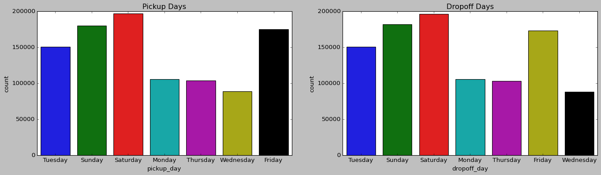
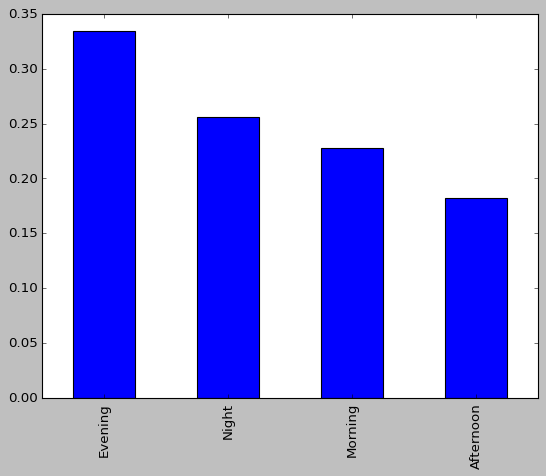
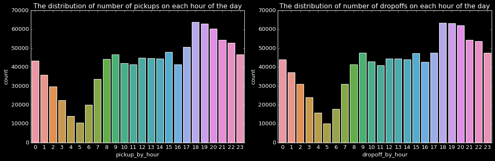

New York Taxi Data Integration
This project focuses on optimizing and analyzing taxi trip data in New York City, involving exploratory data analysis (EDA), feature engineering, and predictive modeling.
Key Responsibilities
- Integrated and analyzed 28M rows of taxi data using Python and SQL.
- Designed and implemented the database schema (ERD) in MySQL.
- Performed feature engineering, including temporal and geographic analysis.
- Built predictive models for fare estimation using machine learning techniques.
Visual Insights

Figure: Taxi Ride Analysis in NYC

Figure: Taxi Ride Analysis ERD Diagram in NYC

Figure: Taxi Ride Analysis Pickup_partday in NYC

Figure: Taxi Ride Analysis PickupDropoff_Hourly in NYC
Technical Details
- Tools Used: Python (Pandas, NumPy, Matplotlib, Scikit-learn), SQL, MySQL, Haversine formula.
- Analysis focused on busiest times, geographic trip patterns, and fare-distance relationships.
- Predictive model performance evaluated using RMSE (~$276.99).